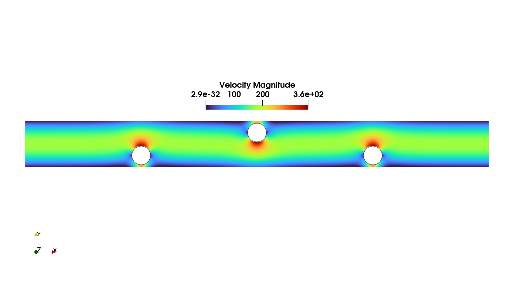

Research
Numerical analysis of coupled flow and transport problems, with applications to reverse osmosis.
Reverse osmosis model
My doctoral research concerns the mathematical modelling and numerical analysis of reverse osmosis desalination. The model couples the incompressible Navier–Stokes equations for the fluid velocity and pressure with a convection–diffusion equation for salt concentration.
To obtain the graphs below, we implement a fully discrete scheme for an unsteady reverse osmosis problem formulated in terms of fluid velocity, pressure, and solute concentration. Time discretization is performed using the first-order semi-implicit Euler method. In space, we employ Taylor–Hood finite elements (P2 for velocity and P1 for pressure), together with continuous piecewise-linear P1 finite elements for concentration. The numerical simulations were implemented in FreeFEM, and the results were visualized using ParaView.
The figure on the left shows the velocity magnitude at the final simulation time. The two adjacent videos display the temporal evolution of the concentration and pressure fields, respectively. They illustrate the accumulation of salt near the membranes of the reverse osmosis channel and the decrease in pressure over time.
For more information about the software used in the numerical simulations, visit FreeFEM and ParaView.
Numerical Simulations

Velocity Magnitude
Spatial distribution of the fluid velocity magnitude.
Pressure
Time evolution of the pressure field.
Concentration
Time evolution of the salt concentration field.
Main topics
- Existence and uniqueness of weak solutions using fixed-point arguments.
- Nonlinear interface conditions at the membrane boundary.
- Conforming finite element methods and discrete well-posedness.
- Stability, a priori error estimates, and numerical convergence.
- Numerical simulations of steady and transient desalination processes.